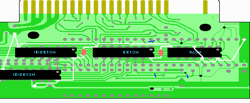
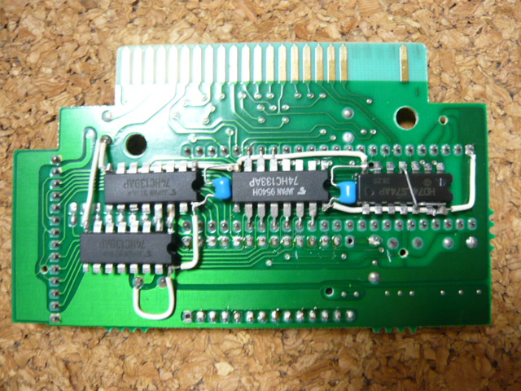

10．ICの電源及びGNDの配線
ここではHC74、HC133、HC139(2個)の電源及びGNDの配線を行います。ICの電源(5V)及びGNDの配線は回路図にかかれていません。ただし、ICに信号ピンに5Vを入れているところ(HC74の4ピン、12ピン)は回路図で灰色でかかれています。

まず、実体図のようにHC74とHC133の間、HC133とHC139(1)の間にパスコンを配置します。
1個目のパスコンはHC74の7ピンとHC133の16ピンをつなぐように配置します。
2個目のパスコンはHC133の8ピンとHC139(1)の1ピンをつなぐように配置します。
まだ半田付けしなくても構いません。あとで電源ライン、GNDラインをつなげるときに一緒に
半田付けしてください。ここではまず上記の位置に仮置きして余分な足をカットしておきます。
次に、電源ラインをつなげます。電源及びGNDラインで使う配線材は若干太めの方が良いかも知れません。
基板の右の方にある2212P001の48ピンと左下の方にある半田の山（実体図を参考にしてください）が5Vです。
実体図を参考にまず左側を
2212P001(48ピン)＝＞HC74(4, 12, 14ピン)＝＞HC133(16ピン, パスコン)
次に右側を
基板の5V＝＞HC139(2)(16ピン)＝＞HC139(1)(16ピン, パスコン)
とつなげてください。
次に、GNDラインをつなげます。基板の左上の方にある半田が盛ってある部分がGNDです。似たようなものが
いくつか近くにありますので、実体図を参考にしてください。以下のように二方向に分けて配線した方が
やりやすいかもしれません。
GND＝＞HC139(2)(8ピン)
GND＝＞HC139(1)(8ピン)＝＞HC133(8ピン、パスコン)＝＞HC74(7ピン、パスコン)
大体こんな感じで。

 次へ
次へ